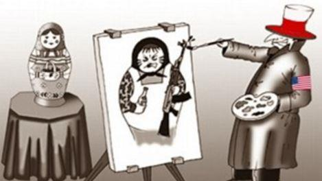
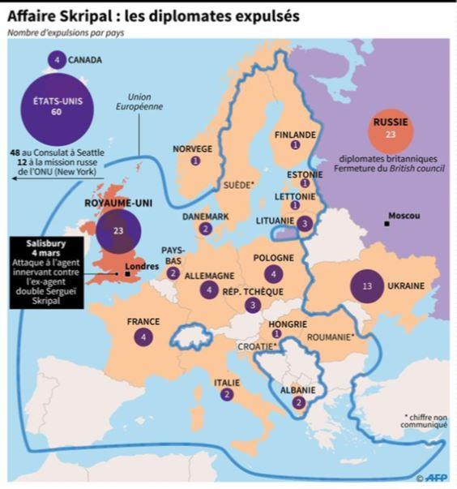
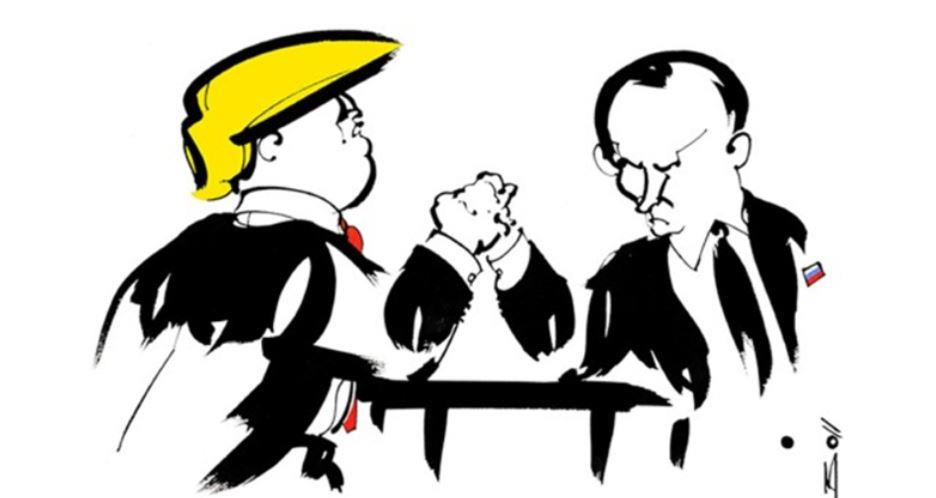

UNE QUESTION PRÉLIMINAIRE SE POSE IMMÉDIATEMENT : L’ACTUELLE RÉÉMERGENCE DE LA RUSSIE EST-ELLE RÉSISTIBLE OU IRRÉSISTIBLE ?
Les deux sans doute à la fois.
Irrésistible en raison de la supériorité technique que la Russie a acquis ces deux dernières décennies et acquiert apparemment avec une rapidité déconcertante dans certains domaines militaires tels les vecteurs balistiques hypervéloces (autrement dit hypersoniques), la défense anti-aérienne grâce aux systèmes S-400 Triumph et à des capacités de brouillage électronique révolutionnaires. Sans parler des torpilles à cavitation tueuses de porte-avions, lesquelles pourraient remettre en cause la suprématie navale des États-Unis sur les mers et les océans de la planète… C’est cette indéniable capacité de projection de forces qui lui a permis d’intervenir sur la scène proche-orientale et de participer de façon décisive à la restauration de l’État syrien.
Résistible parce que la Russie, géant politique et militaire est encore un nain économique (très schématiquement avec un PIB inférieur à celui de l’Italie) en partie dépendant des cours de l’or noir, mais aussi et surtout en but à une diabolisation dévastatrice, laquelle se traduit par diverses sanctions à caractère financier, politique, diplomatique, etc.
Le 1er juin dernier, Christian Vanneste (un ancien parlementaire français également rédacteur de « Méthode ») publiait une tribune ainsi intitulée : « Pourquoi la Russie est-elle présentée comme l’ennemi prioritaire ? ».
EXCELLENTE QUESTION EN EFFET. MAIS PAR QUI ET POURQUOI ?
Et bien la Russie est en but à la vindicte d’une entité fictionnelle que l’on nomme la « Communauté internationale » qui n’est en fait que le club très fermé de quelques puissances et superpuissances décisionnaires dans les Affaires du monde. En gros la dite Communauté internationale pourrait ou peut se réduire au Conseil de Sécurité des Nations Unies dominé par l’Amérique, le Royaume-Uni et la France.
Développant son propos l’ex député ajoutait : « Il ne se passe pas un jour sans qu’un événement ne survienne pour fournir un prétexte à la diabolisation de la Russie ».
MAIS POURQUOI UNE TELLE DIABOLISATION ?
L’explication la plus simple (ou le premier prétexte invoqué) tient en peu de mots : « immixtion » électronique alléguée dans l’élection présidentielle américaine (comme si quelques messages injectés sur les réseaux sociaux étaient capables de modifier en profondeur une large opinion publique influencée et conditionnée par une multitude de facteurs complexes) ; annexion de la Crimée (le crime des crimes en dépit d’un référendum de rattachement parfaitement valide selon les critères occidentaux – notons à ce propos le mépris des élites occidentales pour l’expression de la volonté populaire par le truchement du suffrage universel) et ingérences supposées et récurrentes en Ukraine dans le conflit qui oppose la République séparatiste du Donbass et le pouvoir central de Kiev. Un conflit initialement créé de toutes pièces par le chauvinisme sectaire de quelques oligarques et idéocrates ukrainiens.
Nous nous bornerons ici (ou plutôt nous nous contenterons) de ses causes et de ces (mauvaises) raisons justifiant une diabolisation outrancière et potentiellement dangereuse pour l’équilibre régional et international. Il y en aurait sans doute beaucoup d’autres mais risquerait de nous emmener trop loin… d’autres occasions se présenteront certainement de les exposer plus en détail.
Au-delà de la rhétorique du fort au faible - dont la théorie absolue et parfaite se trouve in extenso dans la fable « Le loup et l’agneau » de Jean de La Fontaine – on ne peut qu’être ébahi par l’ahurissante mauvaise foi qui s’exprime à travers les procès d’intention intentés à la Russie accusée de vouloir reconstituer l’empire soviétique, de menacer ses voisins et d’ourdir de sombres complots contre la paix dans le monde. Précisons qu’aujourd’hui le fort serait plutôt à nos yeux celui qui maîtrise (ou a domestiqué) les opinions publiques du monde postindustriel grâce à des médias entièrement acquis à sa cause. Notamment parce que les grands médias internationaux – ceux qui fabrique l’opinion et les opinions publiques – sont des relais et des outils aux mains des puissances financières qui dirigent le destin des nations… Possédant ainsi la possibilité et les moyens de formater et de manipuler des masses humaines colossales sans se préoccuper de l’obstacle que constitueraient les frontières. Un moyen privilégié pour obtenir le consentement (au moins tacite) des nations à toutes les aventures politiques ou militaires où voudraient s’engager l’hyperclasse mondiale. C’est de cette façon que progresse d’ailleurs le Nouvel ordre mondial.
Il est parfaitement évident que la Russie ne possède pas – et de loin – cette puissance de feu médiatique (pensons à CNN, à la BBC, à Al Jazirah, au NY Times, etc.). Que par suite, elle ne possède pas la capacité nécessaire et suffisante pour neutraliser les tirs de barrage médiatique dont elle est l’objet et qu’elle doit subir volens nolens.
De ce point de vue les politiques de diabolisation constituent sinon déjà des actes de guerre en soi, en tous cas elles préparent l’opinion internationale à accepter l’éventualité d’un conflit armé en en banalisant l’idée… en l’occurrence, dans la conjoncture actuelle, il s’agirait d’un conflit plus ou moins ouvert avec l’Iran et au-delà avec la Russie.
On voit à ce propos – ayant présent à l’esprit les cas de l’Irak de Saddam Hussein ou de la Libye de Kadhafi, tout deux préalablement démonisés par la presse occidentaliste - sur quels événements tragiques peut déboucher la diabolisation d’un pays et de ses dirigeants. Une procédure et un processus aussi vieux que la société humaine : quand l’on veut tuer son voisin, on le déclare hérétique ou sorcier…
Les guerres modernes ont désormais pour préalable ou pour préambule obligé, une préparation du terrain psychologique tant chez l’agresseur (opinion intérieure) que chez le futur agressé dont il faut affaiblir les défenses psychologiques. On l’a bien vu lors de la guerre contre le régime baasiste irakien du printemps 2003, miné moralement (des valises de dollars ayant aussi servi à acheter de nombreux changements d’allégeances).
Pour passer de la théorie à la pratique, à présent penchons-nous un instant sur des cas concrets mettant en évidence les mécanismes de cette diabolisation.
EXEMPLES :
Tous ici avons encore frais dans notre mémoire l’affaire Skrispal : le 4 mars 2018, un ancien colonel du service de renseignement de l’armée russe dans les années 1990 et ex agent double au service du MI6 britannique, Sergueï Skripal, 66 ans, et sa fille Ioulia, 33 ans, sont retrouvés inconscients devant un centre commercial de Salisbury au sud de l’Angleterre.
Le 12 mars, le Premier ministre britannique Theresa May présente comme « très probable que Moscou soit responsable » en premier lieu parce que la substance utilisée « de qualité militaire est d’un type produit par la Russie » ! Des affirmations péremptoires (l’argument d’autorité, la parole d’un Premier ministre ne pouvant être mis en doute), non sources, non documentés. Bref, tout ce qui caractérise les fake news hors d’un tel contexte officiel.
En fait la substance incriminée, le novitchok, un agent innervant (soit une arme chimique redoutable née de la guerre froide, qui ne serait plus produit depuis longtemps sur le territoire de l’ex Union soviétique.
Une substance qui au demeurant n’a pas déterminé la mort de la cible, ni celle de sa fille.
Le 14 mars, Londres juge la Russie « coupable » et, en représailles, expulse 23 diplomates russes (sur 59 présents au Royaume-Uni) ; le Foreign Office gèle ses relations avec Moscou et annonce qu’en représailles, aucun membre de la famille royale ou du gouvernement n’assistera à la Coupe du monde de football en Russie (14 juin-15 juillet).
Le ministère russe des Affaires étrangères déplore le « choix de la confrontation » du Royaume-Uni dans une « campagne antirusse »
Le 15 mars, Londres, Paris, Berlin et Washington estiment dans une déclaration commune que la responsabilité russe est la seule explication « plausible ».
Le 16 mars, Londres juge « extrêmement probable » que le président russe ait personnellement « ordonné » l’empoisonnement.
La rapide escalade dans l’accusation est intéressante à plus d’un titre. D’abord en mettant en évidence l’intention de nuire des accusateurs certains de se trouver sur un terrain où l’adversaire russe est à découvert. C’est-à-dire démuni, dépourvu d’éléments de preuve susceptibles de faire litière des arguments du gouvernement anglais. Il faudra attendre plusieurs semaines, à l’issue d’un difficile contre enquête à laquelle le Royaume-Uni refuse de s’associer et que, plus encore, il refuse de valider, pour que s’écroule l’édifice de falsifications et de preuves truquées.
Un joli coup tordu qui en second lieu illustre magistralement la parfaite coordination politique, diplomatique et médiatique existant entre les différents membres de l’Alliance Atlantique : à l’arrivée ce sont plus de trois cents diplomates russes qui sont expulsés.
Dix-huit pays de l'Union européenne ont immédiatement suivi Londres en expulsant quelque 30 diplomates russes en sus des 23 déclarés persona non grata au Royaume-Uni. En, Allemagne quatre expulsions, idem en France et en Pologne, en Lituanie trois, en Tchèquie trois, en Espagne, en Italie, aux Pays-Bas, au Danemark deux, pour leur part la Suède, la Lettonie, la Roumanie, la Croatie, la Finlande, l’Estonie, la Hongrie, l’Irlande, la Belgique ont congédié chacun un diplomate.
Programme non limitatif ainsi que le déclare Donald Tusk, président tournant du Conseil européen en soulignant que « des mesures supplémentaires, et de nouvelles expulsions, étaient possibles dans les prochains jours et semaines ».
Expulsion de diplomates russes à Londres
Aux États-Unis, soixante diplomates russes et leur famille sont invités à quitter le 31 mars le territoire américain ce qui constitue « la plus importante expulsion d'agents de renseignement russes » (!) de l'histoire des États-Unis.
Le 17 mars, Moscou annonce l’expulsion de 23 diplomates britanniques et l’arrêt des activités du British Council en Russie, après avoir convoqué l’ambassadeur britannique, ceci à la veille de la présidentielle russe (18 mars) qui devrait aboutir à la réélection de Vladimir Poutine.
On voit donc dans quel contexte s’est développée l’affaire Skripal et quels pouvaient en être les objectifs politiques à court et à moyen terme.
Affaire est, rappelons-le, survenue après celle de l'ancien agent de l'ex KGB, Alexandre Litvinenko, mort empoisonné au polonium en novembre 2006. La nouvelle affaire a largement prospéré sur terrain préalablement pourri : à savoir celui d’un précédent ayant préparé l’opinion britannique à accepter d’autant plus facilement la thèse officielle de l’intoxication criminelle de Sergueï Skripal.
Une opinion conditionnée en permanence par toutes les fantasmagories hollywoodiennes et en particulier par l’inoxydable et increvable agent 007.
Une diabolisation de la Russie qui avant l’Affaire Skripal avait peine à remplir tous ses objectifs : les ingérences au Donbass ; la tragédie du vol 17 de la Malaysia Airlines – un vol international régulier reliant Amsterdam à Kuala Lumpur - abattu en vol le 17 juillet 2014 dans la région de Donetsk à l’est de l'Ukraine, vraisemblablement par un système anti-aérien de fabrication russe… mais naguère vendu à l’Ukraine ; l’annexion de la Crimée, l’élection de Donal Trump à la présidence américaine grâce à d’obscurs traficotages informatiques… or en 2018 toutes ces machinations avaient fait long feu. Il fallait en conséquence, d’urgence, raviver la flamme de la russophobie militante et relancer la course de ce qui commencer à ressembler de plus en plus à une nouvelle guerre froide.
C’EST DANS CE CONTEXTE QU’EST INTERVENUE L’AFFAIRE SKRIPAL.
Un fait divers démesurément grossi et cyniquement utilisé à des fins peu morales. Reste que le camp occidental n’est pas, comme on l’a vu avec consternation ces trois dernières décennies, avare de manipulations aussi grossières soient-elles.
Rappelons qu’avant le 4 mars 2018, le 28 avril 2016 les députés français avaient adopté la résolution n° 3585 invitant le gouvernement à ne pas renouveler les mesures restrictives et les sanctions économiques imposées à la Fédération de Russie par l’Union européenne.
Le 2 août 2017 « au nom de l’unité nationale », le président des États-Unis signait à contrecœur une loi – autrement dit en la désapprouvant à demi mots - destinée à renforcer les sanctions visant la Russie, toujours au motif de son « immixtion » alléguée dans l’élection présidentielle américaine, pour l’annexion de la Crimée et ses intolérables ingérences en Ukraine.
Si Donald Trump n’a pas mis son veto aux sanctions contre la Russie, il précisait cependant : « En limitant la marge de manœuvre de l’exécutif, cette loi entrave la capacité des États-Unis à conclure de bons accords pour le peuple américain »… « Pour autant, malgré ces problèmes, je promulgue cette loi. Elle représente la volonté du peuple américain de voir la Russie prendre des mesures pour améliorer les relations avec les États-Unis ».
On ne saurait mieux dire. C’est contraint et forcé que le président américain, assurément soucieux de normaliser ses relations avec Moscou, surenchérit dans une désastreuse politique de sanctions. Désastreuse parce qu’elle introduit et aggrave un facteur risque parfaitement inutile dans la marche du monde.
Au final, on comprend que l’État profond américain, globaliste, expansionniste, et pour ce faire, sournoisement belliqueux, cherche par toutes les voies et moyens à se débarrasser d’un président aussi peu enclin à épouser leur stratégie de tension internationale.
POUR NOUS RÉSUMER :
La diabolisation de la Russie, dont les raisons géopolitiques seraient à chercher assez loin dans l’histoire pour des raisons qu’ont théorisé naguère, avec une grande hauteur de vue, des penseurs comme Halford Mackinder qui en 1904, dans un article du Geographical Journal, opposait – dans la perspective de ce qui deviendra la course à la domination mondiale telle que James Burnham, néoconservateur avant la lettre, l’exposera en 1947 – définit les rapports géostratégiques mondiaux par l’opposition du Heartland - lequel s'étend de la Volga au Yangtze et de l’Himalaya à l’Arctique – à l’Empire thalassocratique anglo-américain sur les mers et les espaces océaniques.
En 1919 Mackinder résume sa thèse (en outre déjà énoncée par le pirate Walter Raleigh 1552/1618) en quelques formules lapidaires : « Qui contrôle l’Europe de l’Est contrôle l’Heartland / Qui contrôle l’Heartland contrôle l’Île Monde / Qui contrôle l'Île Monde contrôle le monde ».
Une explication certainement insuffisante mais qui a le mérite de donner un cadre géopolitique à ce vaste débat.
Partager cette page